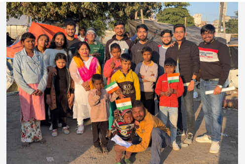
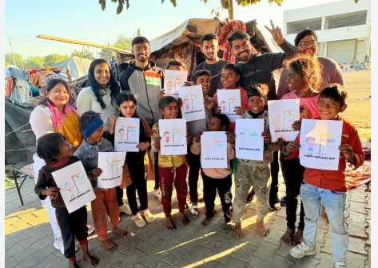

Gallery
Moments That Inspire Us


InAmigos Foundation is dedicated to empowering communities through education, women empowerment, environmental sustainability, animal welfare, and social welfare initiatives.


InAmigos Foundation is a Section 8 registered non-profit organization dedicated to creating meaningful social impact across communities. Through initiatives focused on education, women empowerment, environmental sustainability, animal welfare, and social service, we strive to build a more inclusive and compassionate society.
Our projects are designed to empower individuals, support underprivileged communities, and encourage active participation from volunteers and youth. Together, we believe in creating sustainable change that positively impacts lives.
Through our diverse initiatives, InAmigos Foundation works towards education, social welfare, environmental sustainability, women empowerment, animal welfare, and skill development.
Over 50,000+ meals and clothing items distributed to underprivileged communities.
Bridging educational gaps through digital literacy, life skills training, and academic support for children.
Supporting animal welfare by feeding 50+ stray animals daily.
Empowering women through skill development, financial independence, and menstrual hygiene awareness.
Promoting sustainability through 20,000+ saplings planted and eco-friendly agricultural practices.
Skill development and employment opportunities, training 30,000+ interns across multiple professional domains.
At InAmigos Foundation, we believe in the power of collective action. Our transparent operations and strong partnerships enable us to create measurable change across communities.
Through social media outreach, volunteer engagement, and community-driven initiatives, we continue to inspire individuals and organizations to contribute towards a better future.
Join InAmigos Foundation and contribute towards building a better future for communities.
Join Us Today